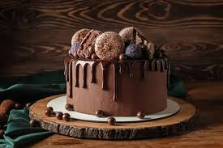

Chocolate-Cake

Description
This decadent chocolate cake recipe is a true indulgence. Moist and rich, it's made with cocoa powder, butter, and sugar, and topped with a luscious chocolate ganache frosting. It's perfect for special occasions or whenever you're craving something sweet and chocolatey.
Ingredients
- All-purpose flour
- Cocoa powder
- Baking powder
- Baking soda
- Granulated sugar
- Unsalted butter
- Eggs
- Milk
- Vanilla extract
- Hot water
- For the ganache frosting:
- Semisweet chocolate
- Heavy cream
Steps
- Preheat the oven to 350°F (175°C) and grease and flour a cake pan.
- In a mixing bowl, whisk together flour, cocoa powder, baking powder, baking soda, and granulated sugar.
- Add softened butter, eggs, milk, and vanilla extract to the dry ingredients. Mix until well combined.
- Gradually add hot water to the batter, mixing on low speed until smooth.
- Pour the batter into the prepared cake pan and bake for 30-35 minutes or until a toothpick inserted into the center comes out clean.
- Allow the cake to cool completely before frosting.
- For the ganache frosting, melt semisweet chocolate and heavy cream in a heatproof bowl set over simmering water. Stir until smooth.
- Pour the ganache over the cooled cake, letting it drip down the sides.
- Let the ganache set before slicing and serving.